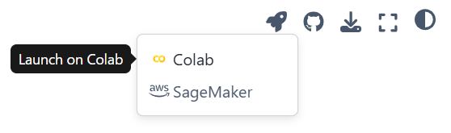
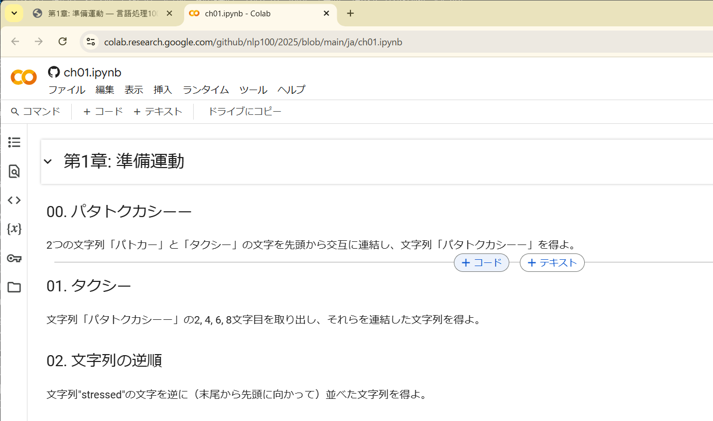
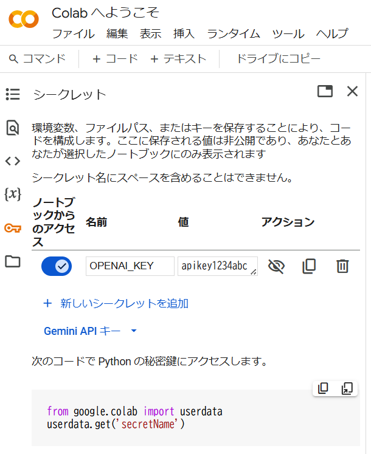

実行環境の準備#
言語処理100本ノック 2025を始めるにはプログラミング環境が必要です。また、第8章から第10章までの問題の一部では、GPUなどの深層学習向けアクセラレータが必要になります。深層学習向けのプログラミング環境を整備するには、高度な知識やスキルが必要になりますので、特段の理由が無ければGoogle ColaboratoryやSageMaker Studio Labなどのクラウド上のJupyter実行環境を活用することをお勧めします。
Google Colaboratory#
各章のページ右上のロケット（🚀）のアイコンをクリックし、Colabを選ぶと、Google Colaboratory上でその章の問題を（Jupyter Notebookとして）開くことができます。
あとは、コードセルを挿入してコーディングを行い、プログラムを実行しながら学習を進めましょう。Google Colaboratoryの基本的な使い方は、他のウェブサイト等を参考にしてください。Python早見帳にもGoogle Colaboratoryの使い方がまとめられています。以降では、特に重要な事柄を説明します。
APIキーの管理#
言語処理100本ノックの5章で大規模言語モデルの有料API（例えばOpenAIのGPT-4シリーズのAPI）を用いる場合、APIキーが必要になります。 このAPIキーが漏洩してしまうと、他人が勝手に有料のAPIを使い、その利用料があなたに請求されることになります。 コードの中にAPIキーをべた書きしていると、Jupyter Notebookを他人と共有した時にAPIキーが漏洩する恐れがありますので、APIキーをコードの中に記述するのは避けるべきです。
Google Colaboratoryには、APIキーのような秘密の文字列を管理する機能があります。左側のツールバーから鍵（🔑）のアイコンをクリックすると、キーとその値を管理する画面が現れます。ここで、キーの名前を適当に決めて「名前」欄に、キーの内容を「値」欄に入力し、「ノートブックからのアクセスを」にチェックを入れます。ここに登録したAPIキーはコードの実行時に取得できます。
例えば、OPENAI_KEYとしてapikey1234abcを登録した場合、以下のコードで文字列"apikey1234abc"を取得できます。
from google.colab import userdata
userdata.get('OPENAI_KEY')
このように、コードの中に直接APIキーを記述することなく、APIキーを利用できます。このような秘密の文字列の管理は、第9章や第10章でHuggingFaceのアクセストークンやWandBのAPIキーの管理でも重宝します。